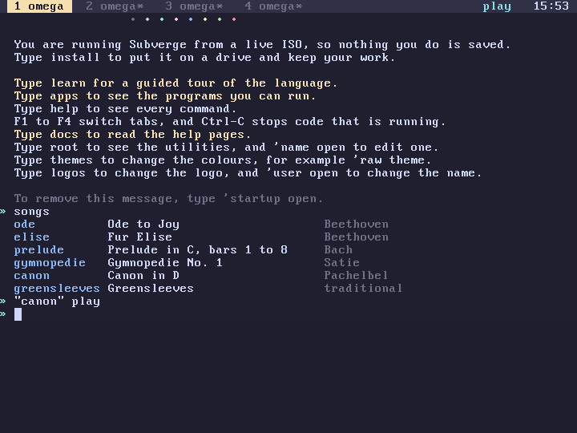

subverge
subvergeSound
Subverge plays music through a Sound Blaster 16. sound? is 1 when the system found one at boot. Without one, play fails with no sound card and everything else works as before. beep uses the PC speaker and is separate (screen).
Songs
songs lists the songs that are built into the kernel:
| Name | Song | By |
|---|---|---|
ode |
Ode to Joy | Beethoven |
elise |
Fur Elise | Beethoven |
prelude |
Prelude in C, bars 1 to 8 | Bach |
gymnopedie |
Gymnopedie No. 1 | Satie |
canon |
Canon in D | Pachelbel |
greensleeves |
Greensleeves | traditional |
All of them are in the public domain. They are short arrangements written for the synthesizer of the kernel, not recordings, and some leave out the parts that are not the tune: prelude stops after eight bars, and canon plays the ground bass with three entries of the melody and a figure in eighth notes.
Words
| Word | Effect |
|---|---|
play |
name --, starts a song |
stop |
--, stops it |
songs |
--, lists the songs |
playing? |
-- n, 1 while a song is playing |
sound? |
-- n, 1 when there is a sound card |
"canon" play
playing? .
1
stop
play takes the whole name or the start of one, as long as only one song matches. A second play replaces the song that is playing, whichever tab started it.

In the background
play returns at once and the song goes on while you do other things. It doesn't belong to a tab, so it keeps playing when you switch tabs, open a window, start a long job or edit text. The top bar shows play next to the clock for as long as a song is playing. When the song has finished and the echo has faded, the word goes away.
The music is mixed in the interrupt of the sound card, 11 times a second, so a tab that is busy doesn't make it stutter. A tab that stops running with an error doesn't stop it either.
The synthesizer
The kernel mixes eight voices at 44100 samples a second in 16 bits, mono, and adds a reverberation to the sum. A song is a few lines of notes in a text format. There are two sounds.
- A plucked string, made by a short loop of noise that loses a little energy each time round. It rings out by itself and fades faster in the high notes, like a harp or a lute.
- An organ, made of the first harmonics of the note with a second voice a little out of tune with the first. It starts softly and keeps going until the note ends.
When more than eight notes sound at once, the one that started first is cut off.